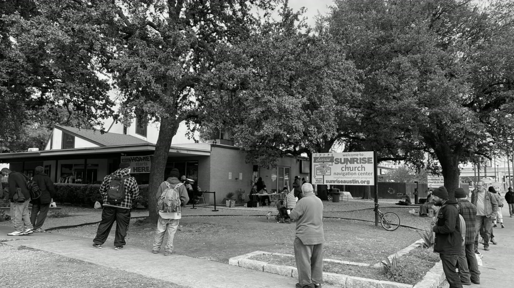

Community · Remodel & Ongoing Support
Sunrise Navigation Center · Austin, TX

Sunrise Navigation Center works with people experiencing homelessness in Austin. They offer pathways to housing through low-barrier access to wraparound services, and the whole model is deliberately under one roof: humanitarian aid, mental health care, physical healthcare, housing support and benefits enrollment, integrated rather than scattered across the city. In their own words, HOME starts here.
Freccia Construction helped Sunrise with a remodel of their facilities. It is the kind of job where the finished space is not really the point. What happens in it afterward is.
Then, in July 2026, we showed up a second way. Our team joined HomeAid Austin and Braeburn to assemble care kits for four Austin nonprofits, and Sunrise was one of the organizations that benefited. Boxing supplies in a ballroom is a long way from framing and finish work, but it comes from the same place: be useful to the people doing the hardest work in this city, in whatever form that takes on the day.
Getting to support their mission in more ways than one has been a genuine joy, and Sunrise Navigation Center is a gem to this community.
Read more about our ongoing partnership with HomeAid Austin.
In Partnership With
Sunrise Navigation Center · HomeAid Austin · Braeburn